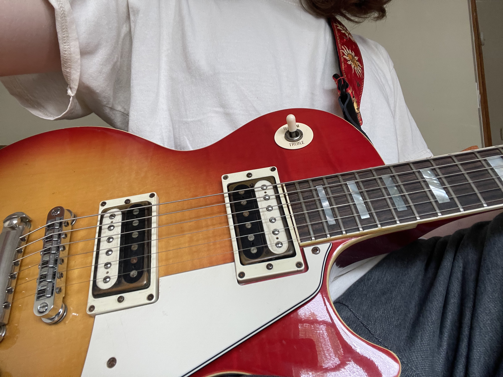

I only started learning it in late June of 2023, but I've been making a lot of progress! I get a lot of my inspiration from a Russian band called "Civil Defense". Attached is a cover to one my favorite songs by them, made by a very talented man on YouTube.
I get a lot of inspiration from Primus, more specifically their bassist Les Claypool.